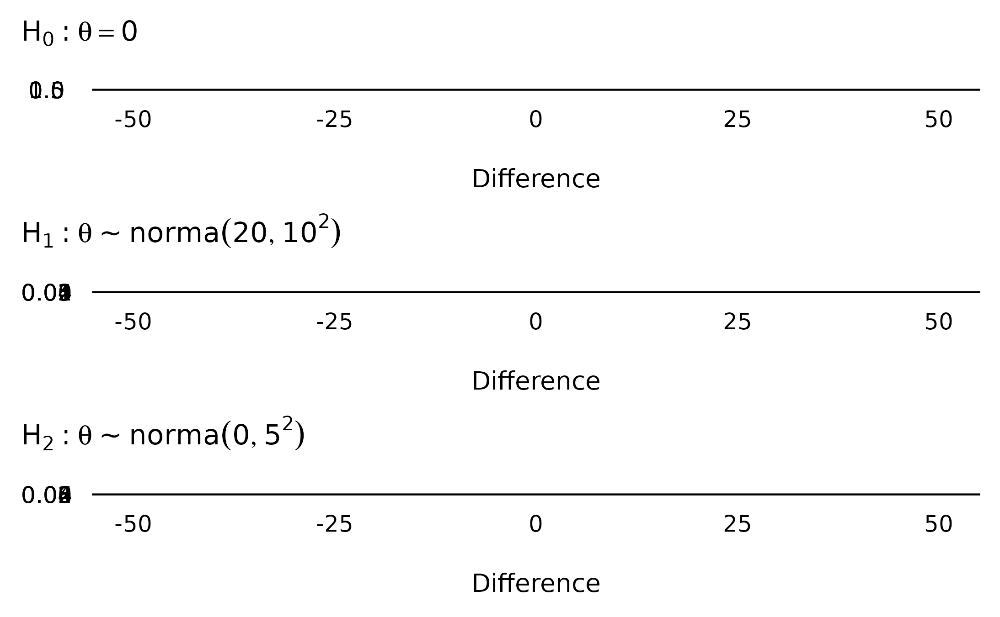
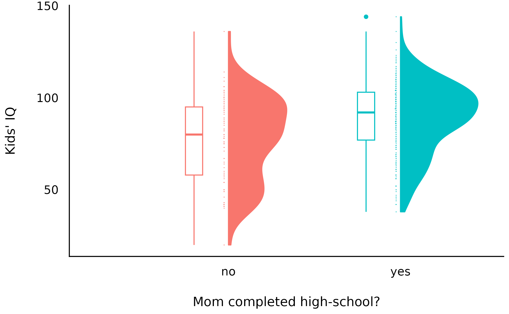
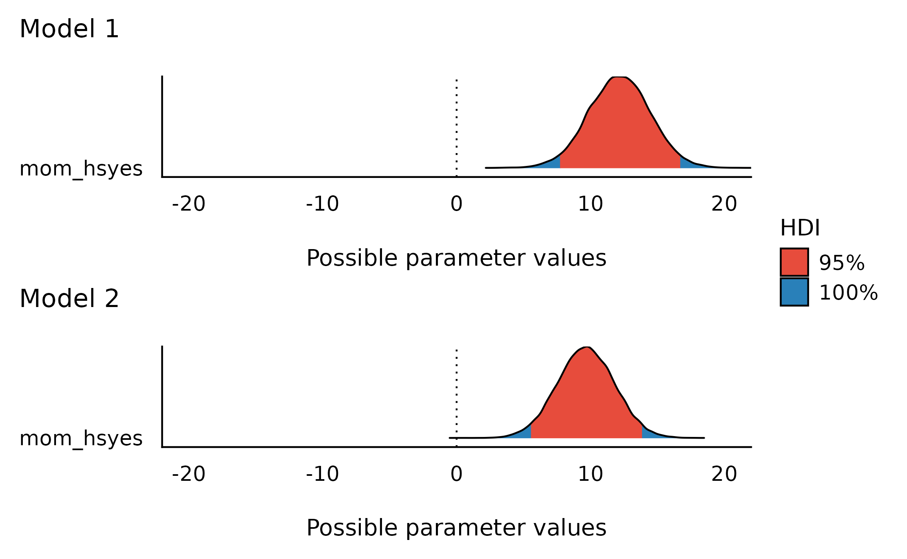
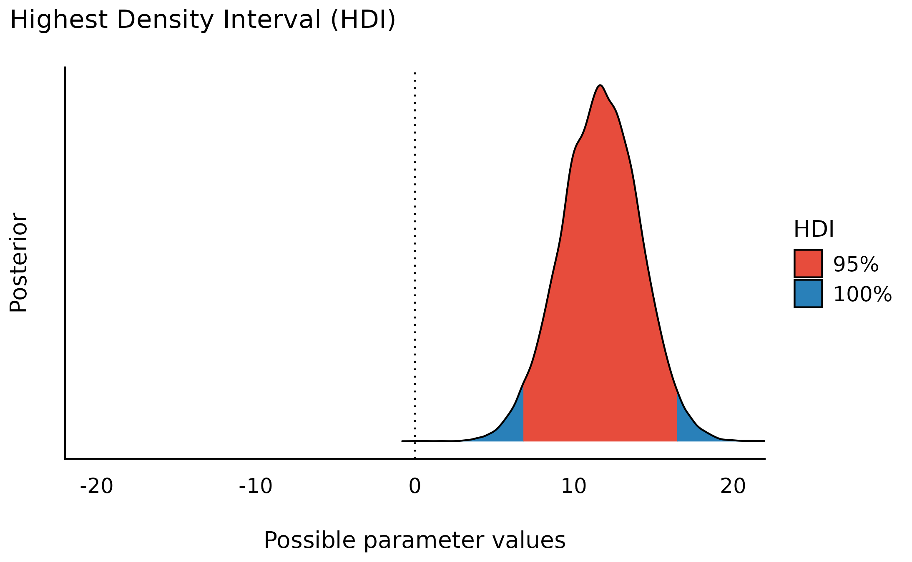
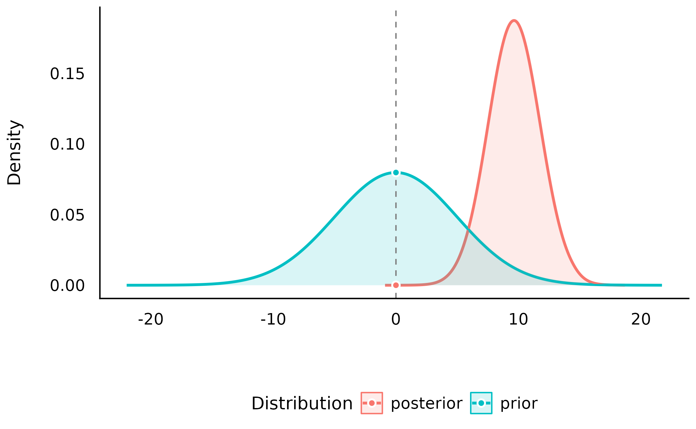
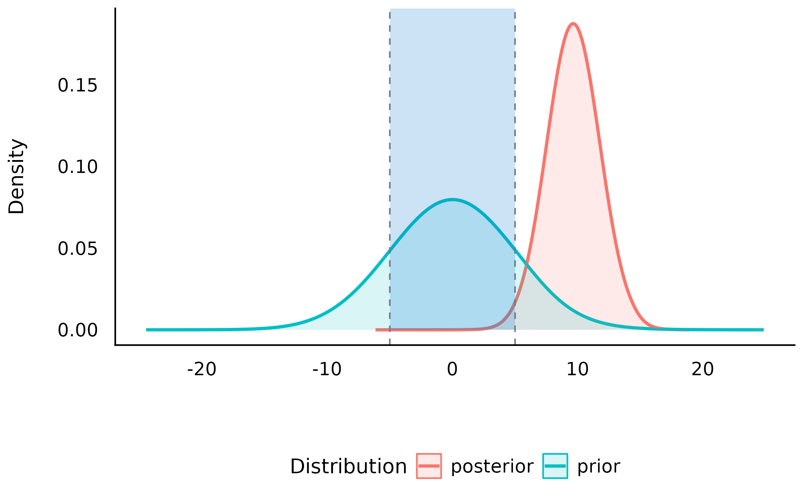
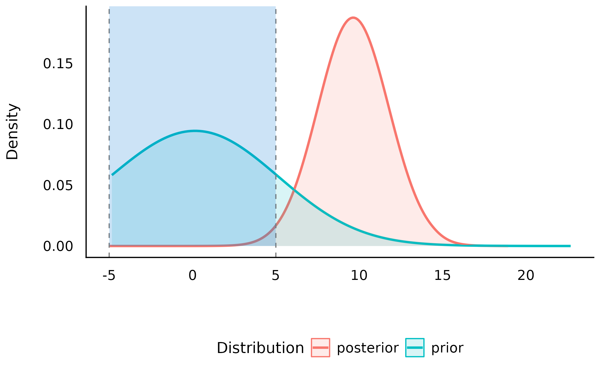
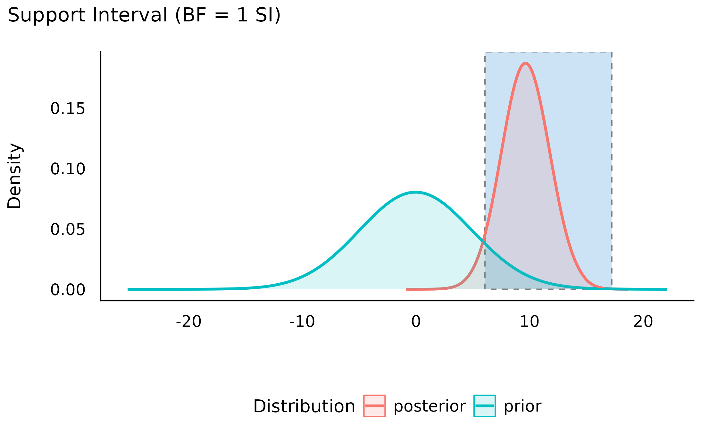

This vignette can be referred to by citing the following:
Makowski, D., Ben-Shachar, M. S., & Lüdecke, D. (2019). bayestestR: Describing Effects and their Uncertainty, Existence and Significance within the Bayesian Framework. Journal of Open Source Software, 4(40), 1541. https://doi.org/10.21105/joss.01541
Makowski, D., Ben-Shachar, M. S., Chen, S. H. A., & Lüdecke, D. (2019). Indices of Effect Existence and Significance in the Bayesian Framework. Retrieved from 10.3389/fpsyg.2019.02767
The adoption of the Bayesian framework, especially in the social and psychological sciences, seems to be developing in two distinct directions, with their separation often marked by their opinion of the Bayes factor. In short, one school of thought (e.g., the Amsterdam school, led by E. J. Wagenmakers) advocate its use, and emphasize its qualities as a statistical index, while another point to its limits and prefer, instead, the precise description of posterior distributions (using CIs, ROPEs, etc.).
The bayestestR package does not take a
side in this debate, and offers tools to carry out analysis irrespective
of the school you subscribe to. Instead, it strongly supports the notion
of an informed choice:
discover the methods, learn about them, understand them, try them, and decide for yourself.
Having said that, here’s an introduction to Bayes factors :)
The Bayes Factor
There are many ways to conceptualize Bayes factors (BFs), but fundamentally: BFs are indices of relative evidence between two hypotheses over another.
According to Bayes’ theorem, given a the prior probability of some hypothesis \mathcal{H} (P(\mathcal{H})) and some data \mathcal{D}, we can find the posterior probability of the hypothesis (P(\mathcal{H|D})) by accounting for the probability of observing that datum were the hypothesis true (P(\mathcal{D|H}), also known as the likelihood):1
P(\mathcal{H|D}) = \frac{P(\mathcal{D|H})\times P(\mathcal{H})}{P(\mathcal{D})}
Within this context, an hypothesis is formalized through the specification of an a-priori model: Priors on the parameters (\Theta) that define the data generating process.
If we have two hypothesis, we can find their posterior probability-odds as such:
\underbrace{\frac{P(\mathcal{H}_1|\mathcal{D})}{P(\mathcal{H}_2|\mathcal{D})}}_{\text{Posterior Odds}} = \underbrace{\frac{P(\mathcal{D}|\mathcal{H}_1)}{P(\mathcal{D}|\mathcal{H}_2)}}_{\text{Likelihood Ratio}} \times \underbrace{\frac{P(\mathcal{H}_1)}{P(\mathcal{H}_2)}}_{\text{Prior Odds}}
Where the likelihood ratio (the middle term) is the Bayes factor - it is the factor by which some prior odds have been updated after observing the data to posterior odds. This value can also be thought is predictive terms - how well has a formalized prior model predicted the observed data compared to another formalized prior model?
Thus, Bayes factors can be calculated in two ways: {#bf-definitions}
- As a ratio quantifying the relative probability of the observed data under each of the two hypotheses: (In some contexts, these probabilities are also called marginal likelihoods.)
BF_{12}=\frac{P(\mathcal{D}|\mathcal{H}_1)}{P(\mathcal{D}|\mathcal{H}_2)}
- As the degree of shift in prior beliefs about the relative credibility of two hypotheses (since they can be computed by dividing posterior odds by prior odds).
BF_{12}=\frac{\text{Posterior Odds}_{12}}{\text{Prior Odds}_{12}}
bayestestR provides functions for computing Bayes factors in two different contexts:
- Comparing statistical models that differ on their priors which represent two competing hypotheses
- Testing single estimates (parameters, coefficients, transformed parameters) within a given model
1. Comparing Models using Bayes Factors
Let’s take a look at the kid IQ dataset from the rstanarm package.
data("kidiq", package = "rstanarm")
kidiq <- subset(kidiq, select = c(kid_score, mom_hs))
kidiq <- transform(
kidiq,
mom_hs = factor(mom_hs, levels = 0:1, labels = c("no", "yes"))
)
head(kidiq)> kid_score mom_hs
> 1 65 yes
> 2 98 yes
> 3 85 yes
> 4 83 yes
> 5 115 yes
> 6 98 noWe’ll be trying to answer a simple question: what is the mean
difference in IQ scores between children whose mothers completed
high-school and those whose mothers did not complete high school (as
indicated by the mom_hs variable).
There are many hypothesis we might have about this difference. Let’s start by examining:
- \mathcal{H}_0: There’s no difference in IQ between the two groups.
- \mathcal{H}_1: The difference is probably around 20 point in favor of kids whose mothers completed high school.
- \mathcal{H}_2: A more conservative hypothesis that the difference, if it exists, is probably no more than about 5 point in either direction.
Let’s plot these:

We can build models with these different priors with brms or rstanarm:2
In any case, note the we will always require many posterior samples for the stability of our BF estimation (typically 10 times more than what we would need for posterior estimation alone; Gronau, Singmann, & Wagenmakers (2020)).
library(rstanarm)
mod_H0 <- stan_glm(
kid_score ~ 1,
family = gaussian(),
data = kidiq,
chains = 10,
iter = 5000,
warmup = 1000,
refresh = 0,
# required for BF computation
diagnostic_file = file.path(tempdir(), "df0.csv")
)
mod_H1 <- stan_glm(
kid_score ~ mom_hs,
family = gaussian(),
data = kidiq,
prior = normal(location = 20, scale = 10),
chains = 10,
iter = 5000,
warmup = 1000,
refresh = 0,
diagnostic_file = file.path(tempdir(), "df1.csv")
)
mod_H2 <- stan_glm(
kid_score ~ mom_hs,
family = gaussian(),
data = kidiq,
prior = normal(location = 0, scale = 5),
chains = 10,
iter = 5000,
warmup = 1000,
refresh = 0,
diagnostic_file = file.path(tempdir(), "df2.csv")
)We can now ask: which a-priori model (each representing a different hypothesis) is more likely to have produced the observed data?
This is usually done by comparing the marginal likelihoods of two models. In such a case, the Bayes factor is a measure of the relative evidence for one hypothesis over the other.
bfs <- bayesfactor_models(mod_H1, mod_H2, denominator = mod_H0, verbose = FALSE)
print(bfs, show_names = TRUE)> Bayes Factors for Model Comparison
>
> Model BF
> [mod_H1] mom_hs 4.43e+04
> [mod_H2] mom_hs 1.17e+04
>
> * Against Denominator: [mod_H0] (Intercept only)
> * Bayes Factor Type: marginal likelihoods (bridgesampling)We can see that both models that allow for a difference between the groups are much more supported by the data - with BF>11661.33 - compared to the null (intercept only).
Note that interpretation guides for Bayes factors
can be found in the effectsize package:
effectsize::interpret_bf(bfs$log_BF[1:2], log = TRUE)> [1] "extreme evidence in favour of" "extreme evidence in favour of"
> (Rules: jeffreys1961)Due to the transitive property of Bayes factors, we can easily change the reference model to the model representing \mathcal{H}_2:
> Bayes Factors for Model Comparison
>
> Model BF
> [mod_H1] mom_hs 3.80
>
> * Against Denominator: [mod_H2] mom_hs
> * Bayes Factor Type: marginal likelihoods (bridgesampling)The data supports the a-priori model that suggests a positive difference almost 4 times over the model that suggests a small difference.
We can also get a matrix of Bayes factors of all the pairwise model comparisons:
> # Bayes Factors for Model Comparison
>
> Denominator\Numerator | [mod_H1] | [mod_H2] | [mod_H0]
> ---------------------------------------------------------------
> [mod_H1] mom_hs | 1 | 0.263 | 2.26e-05
> [mod_H2] mom_hs | 3.80 | 1 | 8.58e-05
> [mod_H0] (Intercept only) | 4.43e+04 | 1.17e+04 | 1Overall, we can see that both models that allow for some non-0 difference are much more supported by the data compared to the 0-difference model. Let’s take a look at the data:

And indeed both models 1 and 2’s posteriors reflect this difference:

Note that these posterior distributions are very similar, but BFs do not compare posterior models - only a-priori models!
For this reason, computing BFs only makes sense if we are able to formulate our hypotheses into distinct priors.
The BIC approximation
It is also possible to compute approximate Bayes factors for the comparison of frequentist models (😱). This is done by comparing BIC indices, allowing a Bayesian comparison of nested as well as non-nested frequentist models (Wagenmakers, 2007).
Since frequentist modeling does not allow for specification of priors, we are limited to either restricting parameters to 0 or not.
mod_H0f <- lm(kid_score ~ 1, data = kidiq)
mod_H1f <- lm(kid_score ~ mom_hs, data = kidiq)
bayesfactor_models(mod_H1f, denominator = mod_H0f)> Bayes Factors for Model Comparison
>
> Model BF
> [1] mom_hs 1.33e+04
>
> * Against Denominator: [2] (Intercept only)
> * Bayes Factor Type: BIC approximation(Note how similar this approximate BF is to the proper BFs estimated above.)
Model averaging
In the previous section, we discussed the direct comparison of two models to determine if a hypothesis is supported by the data. However, in many cases there are too many models to consider, or perhaps it is not straightforward which models we should be comparing to determine if an effect is supported by the data. For such cases, we can use Bayesian model averaging (BMA) to determine the support provided by the data for a parameter or model-term across many models.
Inclusion Bayes factors
Inclusion Bayes factors answer the question:
Are the observed data more probable under models with a particular predictor, than they are under models without that particular predictor?
In other words, on average, are models with predictor X more likely to have produced the observed data than models without predictor X?3
These Bayes factors are computed not as the ratios of marginal likelihoods, but as the degree of shift in prior beliefs: Since each model has a prior probability, it is possible to sum the prior probability of all models that include a predictor of interest (the prior inclusion probability), and of all models that do not include that predictor (the prior exclusion probability). After the data are observed, and each model is assigned a posterior probability, we can similarly consider the sums of the posterior models’ probabilities to obtain the posterior inclusion probability and the posterior exclusion probability. The change from prior inclusion odds to the posterior inclusion odds is the Inclusion Bayes factor [BF_{Inclusion}; Clyde, Ghosh, & Littman (2011)].
(bfinc <- bayesfactor_inclusion(bfs))> Inclusion Bayes Factors (Model Averaged)
>
> P(prior) P(posterior) Inclusion BF
> mom_hs 0.67 1.00 2.80e+04
>
> * Compared among: all models
> * Priors odds: uniform-equal(bayesfactor_inclusion() is meant to provide Bayes
Factors per predictor, similar to JASP’s Effects option.)
We can see that across the 3 models under consideration, models
with the mom_hs term fit the data 27977.06 times
more than the model without that term.
Averaging posteriors
Similar to how we can average evidence for a predictor across models, we can also average the posterior estimate across models.
ppp <- weighted_posteriors(mod_H0, mod_H1, mod_H2)
plot(hdi(ppp$mom_hsyes)) +
coord_cartesian(xlim = c(-20, 20))
This looks a lot like the posterior obtained from the second model, which shouldn’t be surprising since about 80% of the averaged posterior comes from the second model.
attr(ppp, "weights")> Model weights pweights
> 1 mod_H0 1 2.5e-05
> 2 mod_H1 31665 7.9e-01
> 3 mod_H2 8334 2.1e-01Order restricted models
We’ve already seen we can formalize hypothesis into distributional priors (e.g., the difference is probably no more than about 5 point in either direction. became theta \sim Normal(0, 5^2)). These priors are unrestricted - that is, all values between -\infty and \infty of all parameters in the model have some non-zero credibility (no matter how small; this is true for both the prior and posterior distribution).
But we can also formalize hypotheses as order restrictions (Morey, 2015; Morey & Rouder, 2011).
For example, we can impose an additional order restriction that the difference must be positive, which we can write like this (if we had to):
\mathcal{H}_{2r}: \theta \sim Normal(0, 5^2)\begin{bmatrix} \infty \\ 0 \end{bmatrix}
By testing the probabilities of these restrictions on prior and
posterior samples, we can see how the probabilities of the restricted
distributions change after observing the data - this change is a Bayes factor. These can be
achieved with bayesfactor_restricted(), that compute a
Bayes factor for these restricted model vs the unrestricted model.
bayesfactor_restricted(mod_H2, hypothesis = "mom_hsyes > 0")> Bayes Factor (Order-Restriction)
>
> Hypothesis P(Prior) P(Posterior) BF
> mom_hsyes > 0 0.50 1 2.01
>
> * Bayes factors for the restricted model vs. the un-restricted model.In other words, the data fits the restricted model (where the difference must be small and positive) twice as much as it fits the un-restircted model (where the difference must be small).
We can compare multiple restricted hypotheses. For example: that the difference isn’t just positive, it’s larger than 4.
bf_rstr <- bayesfactor_restricted(
mod_H2,
hypothesis = c(
positive = "mom_hsyes > 0",
strong = "mom_hsyes > 4"
)
)Here too we can obtain a matrix of BFs between all models:
> # Bayes Factors for Restricted Models
>
> Denominator\Numerator | [1] | [positive] | [strong]
> -----------------------------------------------------------
> [1] (Un-restricted) | 1 | 2.00 | 4.70
> [positive] mom_hsyes > 0 | 0.499 | 1 | 2.35
> [strong] mom_hsyes > 4 | 0.213 | 0.426 | 1We can see the “strong” model is preferred over both the un-restricted model and the “positive” model.
Again, we can use the transitive properties of Bayes factors to find the BF comparing \mathcal{H}_{2r} and \mathcal{H}_0:
\begin{align} BF_{2r,0} & = BF_{2,0} \times BF_{2r,2} \\ & = \frac{P(\mathcal{D}|\mathcal{H}_{2})}{P(\mathcal{D}|\mathcal{H}_0)} \times \frac{P(\mathcal{D}|\mathcal{H}_{2r})}{P(\mathcal{D}|\mathcal{H}_2)} \\ & = \frac{P(\mathcal{D}|\mathcal{H}_{2r})}{P(\mathcal{D}|\mathcal{H}_0)} \end{align}
BF_2.0 <- as.numeric(bfs)[2]
BF_2r.2 <- as.numeric(bf_rstr)[2]
(BF_2r.0 <- BF_2.0 * BF_2r.2)> [1] 54865So the data support the hypothesis that the difference is small but strictly positive 54864.55 times more than the hypothesis that the difference is exactly 0.
Because these restrictions are on the prior distribution, they are only appropriate for testing pre-planned (a priori) hypotheses, and should not be used for any post hoc comparisons (Morey, 2015).
We are not limited to a single order restrictions - we can compound them to create complex restrictions.
Let’s look at the disgust
dataset, were 150 individuals rated “moral harshness” of
undocumented migrants in one of three conditions: no odor, clean odor
(lemon), or disgusting (sulfur) odor during questionnaire.
> 'data.frame': 150 obs. of 2 variables:
> $ score : int 13 26 30 23 34 37 33 34 35 33 ...
> $ condition: Factor w/ 3 levels "control","lemon",..: 1 1 1 1 1 1 1 1 1 1 ...Let’s build our simple one-way-ANOVA-like model:
mod_odor <- stan_glm(
score ~ condition,
family = gaussian(),
data = disgust,
prior = normal(location = 0, scale = 2),
contrasts = list(condition = "contr.equalprior_pairs"),
chains = 10,
iter = 5000,
warmup = 1000,
refresh = 0,
diagnostic_file = file.path(tempdir(), "df3.csv")
)NOTE: See the Specifying Correct Priors for Factors with More Than 2 Levels appendix below for more details on the contrast coding used here.
Let’s obtain the prior and posterior distributions of the condition
means using posterior_epred().
mod_odor.prior <- unupdate(mod_odor) # get the priors-only model
library(emmeans)
disgust_means <- emmeans(mod_odor, ~condition)
disgust_means.prior <- emmeans(mod_odor.prior, ~condition)Our hypothesis is that the moral harshness ratings are lowest in the lemon condition, higher in the control condition, and highest in the sulfur condition - in other words, there is an order of: \text{lemon} < \text{control} < \text{sulfur}.
We can formalize this hypothesis as an order restriction on the means of the three conditions:
bayesfactor_restricted(
posterior = disgust_means,
prior = disgust_means.prior,
hypothesis = "lemon < control & control < sulfur"
)> Bayes Factor (Order-Restriction)
>
> Hypothesis P(Prior) P(Posterior) BF
> lemon < control & control < sulfur 0.17 0.68 4.04
>
> * Bayes factors for the restricted model vs. the un-restricted model.We can see that a-priori, this specific ordering of the 3 means has a proability of \frac{1}{6} (1 of 6 possible orderings of 3 values), but after observing the data, this ordering is about ~4 times more likely than any other ordering.
The transitive properties of Bayes factors can also be used to compute a Bayes factor for dividing hypotheses - that is for two complementary opposing one-sided hypotheses (Morey & Wagenmakers, 2014).
For example, we can compare \mathcal{H}_{+}: \theta > 0 - the difference is positive to \mathcal{H}_{-}: \theta < 0: the difference is negative:
\begin{align} BF_{+,-} & = BF_{+,0} \times BF_{0,-} \\ & = \frac{P(\mathcal{D}|\mathcal{H}_{+})}{P(\mathcal{D}|\mathcal{H}_0)} \times \frac{P(\mathcal{D}|\mathcal{H}_{0})}{P(\mathcal{D}|\mathcal{H}_-)} \\ & = \frac{P(\mathcal{D}|\mathcal{H}_{+})}{P(\mathcal{D}|\mathcal{H}_{-})} \end{align}
bf_div <- bayesfactor_restricted(
posterior = disgust_means,
prior = disgust_means.prior,
hypothesis = c(
positive = "lemon - sulfur > 0",
negative = "lemon - sulfur < 0"
)
)
print(as.matrix(bf_div), show_names = TRUE)> # Bayes Factors for Restricted Models
>
> Denominator\Numerator | [1] | [positive] | [negative]
> ------------------------------------------------------------------
> [1] (Un-restricted) | 1 | 0.050 | 1.97
> [positive] lemon - sulfur > 0 | 19.93 | 1 | 39.22
> [negative] lemon - sulfur < 0 | 0.508 | 0.025 | 1The hypothesis that the lemon condition yields lower ratings than the sulfur condition is about 60 times more supported by the data than the hypothesis that the lemon condition has higher ratings than the sulfur condition.
Etc… etc… we can compound as many restrictions as we want, and compare them to each other, or to the unrestricted model, or to the null model, etc.
Overall, Bayes factors are a powerful tool for comparing the relative evidence of two formalized hypotheses (i.e., hypotheses that have been formalized into distinct priors).
Note that Bayes factors are not a tool for comparing
posterior models (for such comparisons, see
the {loo} package) -
and in fact two similar posterior models can have very different BFs if
their priors are different.
2. Testing Models’ Parameters with Bayes Factors
For testing a point null hypothesis (e.g., \mathcal{H}_0: \theta = 0) against some alternative non-null hypothesis (e.g., \mathcal{H}_1: \theta \sim Normal(0, 5^2)), a nice “short cut” can be used to obtain a Bayes factor - via the Savage-Dickey density ratio (Wagenmakers, Lodewyckx, Kuriyal, & Grasman, 2010).
If we zoomed-in on the null value \theta_0 - what does it mean for the null’s credability to have become lower in the posterior distribution? Well, since the null is less credible, that necessarily means that the alternative is more credible by the same amount!
Note that for a point null on a continuous parameter, the probability of the null is always 0, and the probability of all other values is 1. However, the density of the null can be non-zero, and it is this density that quantifies the credibility of the null hypothesis. This means that the prior odds of the null vs the alternative are:
\text{Prior Odds} = \frac{P(\theta \neq \theta_0)}{P(\theta=\theta_0)} = \frac{1}{P(\theta=\theta_0)}
Likewise, the posterior odds of the null vs the alternative are:
\text{Posterior Odds} = \frac{P(\theta \neq \theta_0 \mid \mathcal{D})}{P(\theta=\theta_0 \mid \mathcal{D})} = \frac{1}{P(\theta=\theta_0 \mid \mathcal{D})} \\
Recall that a Bayes factor can be thought of as the degree of shift in the relative credibility of two hypotheses from the prior model to the posterior model:
\begin{align} BF_{10} & = \frac{\text{Posterior Odds}_{10}}{\text{Prior Odds}_{10}} = \frac{\frac{1}{P(\theta=\theta_0 \mid \mathcal{D})}}{\frac{1}{P(\theta=\theta_0)}} = \\ & = \frac{P(\theta=\theta_0)}{P(\theta=\theta_0 \mid \mathcal{D})} \end{align}
In other words, it is sufficient to compare the density of the null under the prior distribution (P(\theta=\theta_0)) with the density of the null under posterior distribution (P(\theta=\theta_0 \mid \mathcal{D})) to obtain a Bayes factor comparing the null and alternative hypotheses - the degree to which the null has become more or less credible after observing the data.
This can be done using the bayesfactor_parameters() -
let’s use it to test the null hypothesis that the difference in IQ
between the two groups is exactly 0:
(sddr <- bayesfactor_parameters(mod_H2, null = 0))> Bayes Factor (Savage-Dickey density ratio)
>
> Parameter | BF
> ----------------------
> (Intercept) | 4.12e+60
> mom_hsyes | 5.93e+03
>
> * Evidence Against The Null: 0Looking at the Savage-Dickey density ratio for the
mom_hsyes parameter, we can see that the null has become
substantially less credible after observing the data - and therefore the
alternative has become more credible.
plot(sddr)
We can see that the center of the posterior distribution has shifted away from 0 (to around 10), and the density at 0 has become much smaller in the posterior distribution compared to the prior distribution suggesting that the data is less compatible with the null value of 0 that with other values overall.
Compare the Savage-Dickey density ratio for the
mom_hsyes parameter with the Bayes factor comparing
mod_H2 (the alternative) and mod_H0 (the
null):
> Bayes Factors for Model Comparison
>
> Model BF
> [mod_H2] mom_hs 1.17e+04
>
> * Against Denominator: [mod_H0] (Intercept only)
> * Bayes Factor Type: marginal likelihoods (bridgesampling)Not perfect, but a good approximation.
Testing against a null-region
One way of operationalizing the null-hypothesis is by setting a null region, such that an effect that falls within this interval would be practically equivalent to the null (Kruschke, 2010). In our case, that means defining a range of effects we would consider equal to no difference in IQ between the two groups. Let’s say we consider any difference between -5 and 5 points to be practically equivalent to no difference at all, we would define our null-region as \mathcal{H}_0: \theta \in [-5, 5].
The Bayes factor for this null-region can be obtained by comparing the change in the relative credibility of the null-region \mathcal{H}_0: \theta \in [-5, 5] and the non-null region \mathcal{H}_1: \theta \notin [-5, 5] from the prior to the posterior distribution - to achieve this, we combine the logic of the Savage-Dickey density ratio with the logic of the order-restricted Bayes factor!
This too can be done with bayesfactor_parameters(), by
specifying a null-region instead of a point null:
(sddr_region <- bayesfactor_parameters(mod_H2, null = c(-5, 5)))> Bayes Factor (Null-Interval)
>
> Parameter | BF
> ----------------------
> (Intercept) | 5.86e+57
> mom_hsyes | 153.56
>
> * Evidence Against The Null: [-5.000, 5.000]
plot(sddr_region)
We can see that the null-region has become much less credible by a factor of >100 after observing the data - suggesting that data is more compatible with non-null values than with null values, and therefore the alternative (that the difference is outside of the [-5, 5] range) has become relatively much more credible.
Directional hypotheses
We can also compute Bayes factors for directional hypotheses (“one sided”), if we have a prior hypotheses about the direction of the effect. This is similiar to the dividing Bayes factor discussed above, but we are still comparing the (directional) alternative to the null (not between two directional hypotheses). This too can be done by setting an order restriction on the prior and posterior distributions (Morey & Wagenmakers, 2014). For example, if we have a prior hypothesis that the difference in IQ between the two groups is positive, the alternative will be restricted to the region to the right of the null (point or interval):
(sddr_directional <- bayesfactor_parameters(mod_H2, null = c(-5, 5), direction = "right"))> Bayes Factor (Null-Interval)
>
> Parameter | BF
> ----------------------
> (Intercept) | 5.88e+57
> mom_hsyes | 301.66
>
> * Evidence Against The Null: [-5.000, 5.000]
> * Direction: Right-Sided test
plot(sddr_directional)
As we can see, given that we have an a priori assumption about the direction of the difference, the evidence against the null is even stronger. Again, given this order restriction on the alternative hypothesis, the posterior mass has substantially shifted away and outside the null value, giving some extreme evidence against the null and in favor of the alternative.
Support intervals and curves
So far we’ve seen that Bayes factors quantify relative support between competing hypotheses. However, we can also ask:
Upon observing the data, the credibility of which of the parameter’s values has increased (or decreased)?
For example, we’ve seen that the point null has become less credible after observing the data, but we might also ask which values have gained credibility given the observed data? The resulting range of values is called the support interval as it indicates which values are supported by the data (Wagenmakers, Gronau, Dablander, & Etz, 2018). We can do this by once again comparing the prior and posterior distributions and checking where the posterior densities are higher than the prior densities.
In bayestestR, this can be achieved with the
si() function:
> Support Interval
>
> Parameter | BF = 1 SI | Effects | Component
> ----------------------------------------------------
> (Intercept) | [74.33, 83.94] | fixed | conditional
> mom_hsyes | [ 6.07, 17.23] | fixed | conditionalThe argument BF = 1 indicates that we want the interval
to contain values that have gained support by a factor of at least 1
(that is, any support at all).
Note that this is different from a credible interval, which contains values that have high credibility in the posterior distribution, regardless of how much their credibility has changed from the prior distribution:
hdi(mod_H2)> Highest Density Interval
>
> Parameter | 95% HDI
> ----------------------------
> (Intercept) | [75.52, 83.06]
> mom_hsyes | [ 5.56, 13.87]Visually, we can see that the credibility of all the values within this interval has increased (and likewise the credibility of all the values outside this interval has decreased):
plot(my_first_si)
We can also see the this support interval excludes the point null (0) - whose credibility we’ve already seen has decreased by the observed data. This emphasizes the relationship between the support interval and the Bayes factor:
“The interpretation of such intervals would be analogous to how a frequentist confidence interval contains all the parameter values that would not have been rejected if tested at level \alpha. For instance, a BF = 1/3 support interval encloses all values of theta for which the updating factor is not stronger than 3 against.” (Wagenmakers et al., 2018)
Thus, the choice of BF (the level of support the interval should indicate) depends on what we want our interval to represent:
- A BF = 1 contains values whose credibility has merely not decreased by observing the data.
- A BF > 1 contains values who received more impressive support from the data.
- A BF < 1 contains values whose credibility has not been impressively decreased by observing the data. Testing against values outside this interval will produce a Bayes factor larger than 1/BF in support of the alternative.
Appendix: Specifying correct priors for factors
When modeling predictors with more than 2 levels (e.g., factors) there any many options for how to encode the factor into the model (e.g., dummy coding, sum coding, etc.). Unlike frequentist modeling, where the choice of contrast coding is mostly a matter of interpretability and convenience, in Bayesian modeling different encodings – and priors on those encodings – can lead to different implied priors.
Rouder, Morey, Verhagen, Swagman, &
Wagenmakers (2017) discuss how one might wish to set some global
multidimensional prior (the g-prior) on the factor’s levels
that is not sensitive to the order of level or the choice of reference
group. These are implamneted in contr.equalprior() and its
siblings.
Below we demonstrate how the choice of contrast coding can lead to different implied priors regarding the possible ordering and differences between the factor’s levels.
Let us fit 3 models with different contrast codings for a factor with 3 levels:
library(rstanarm)
library(bayestestR)
data("disgust", package = "bayestestR")
# Use R's default treatment contrasts (first level as reference)
mod_odor.treatment <- stan_glm(
score ~ condition,
family = gaussian(),
data = disgust,
prior = normal(location = 0, scale = 2),
contrasts = list(condition = "contr.treatment"),
chains = 10,
iter = 5000,
warmup = 1000,
refresh = 0,
diagnostic_file = file.path(tempdir(), "df5.csv")
)
# Use effects contrasts (sum-to-zero)
mod_odor.sum <- stan_glm(
score ~ condition,
family = gaussian(),
data = disgust,
prior = normal(location = 0, scale = 2),
contrasts = list(condition = "contr.sum"),
chains = 10,
iter = 5000,
warmup = 1000,
refresh = 0,
diagnostic_file = file.path(tempdir(), "df6.csv")
)
mod_odor.equalprior <- stan_glm(
score ~ condition,
family = gaussian(),
data = disgust,
prior = normal(location = 0, scale = 2),
contrasts = list(condition = "contr.equalprior"),
chains = 10,
iter = 5000,
warmup = 1000,
refresh = 0,
diagnostic_file = file.path(tempdir(), "df7.csv")
)Let’s use marginaleffects to obtain estimates from these Bayesian (prior) models (after we already showed how do do so with emmeans above).
mod_odor.treatment_prior <- unupdate(mod_odor.treatment)
mod_odor.sum_prior <- unupdate(mod_odor.sum)
mod_odor.equalprior_prior <- unupdate(mod_odor.equalprior)
(pr_treatment_prior <- avg_predictions(
mod_odor.treatment_prior,
variables = "condition"
))>
> condition Estimate 2.5 % 97.5 %
> control 30.3 -2.94 63.4
> lemon 30.3 -3.03 63.4
> sulfur 30.3 -3.00 63.5
>
> Type: response
(pr_sum_prior <- avg_predictions(
mod_odor.sum_prior,
variables = "condition"
))>
> condition Estimate 2.5 % 97.5 %
> control 30.1 -3.28 63.9
> lemon 30.1 -3.37 63.8
> sulfur 30.1 -3.31 64.0
>
> Type: response
(pr_equalprior_prior <- avg_predictions(
mod_odor.equalprior_prior,
variables = "condition"
))>
> condition Estimate 2.5 % 97.5 %
> control 30.3 -3.10 64.0
> lemon 30.2 -2.97 63.9
> sulfur 30.2 -2.87 64.1
>
> Type: responseWe can see that for all 3 models, the means of all three groups have about the same prior distribution: Md=60, 95 CI [-3, +63].
We might expect the same for the differences between the groups, but this is not the case:
avg_comparisons(
mod_odor.treatment_prior,
variables = list("condition" = "pairwise")
)>
> Contrast Estimate 2.5 % 97.5 %
> lemon - control -0.00104 -3.92 3.91
> sulfur - control -0.01706 -3.92 3.90
> sulfur - lemon -0.01666 -5.55 5.48
>
> Term: condition
> Type: responseWe can see that while the prior differences are all centered on 0,
the prior difference of the sulfer - lemon comparison is
much wider compared to the comparisons involving the
control condition.
With effects coding (sum-to-zero), we also get different implied
priors for the differences between the groups, this time the
lemon - control difference is much narrower than the other
two differences involving the sulfer condition:
avg_comparisons(mod_odor.sum_prior, variables = list("condition" = "pairwise"))>
> Contrast Estimate 2.5 % 97.5 %
> lemon - control 0.00866 -5.58 5.50
> sulfur - control -0.02207 -8.78 8.69
> sulfur - lemon -0.00672 -8.80 8.81
>
> Term: condition
> Type: responseBut the contr.equalprior() coding gives us the same
prior distribution for all differences between the groups:
avg_comparisons(
mod_odor.equalprior_prior,
variables = list("condition" = "pairwise")
)>
> Contrast Estimate 2.5 % 97.5 %
> lemon - control 0.028964 -5.52 5.59
> sulfur - control 0.030357 -5.55 5.58
> sulfur - lemon 0.000774 -5.64 5.57
>
> Term: condition
> Type: responseLikewise, the implied priors for the ordering of the groups are different across the three models:
pr_treatment <- avg_predictions(mod_odor.treatment, variables = "condition")
bayesfactor_restricted(
posterior = pr_treatment,
prior = pr_treatment_prior,
hypothesis = "b2 < b1 & b1 < b3"
)> Bayes Factor (Order-Restriction)
>
> Hypothesis P(Prior) P(Posterior) BF
> b2 < b1 & b1 < b3 0.25 0.77 3.09
>
> * Bayes factors for the restricted model vs. the un-restricted model.
pr_sum <- avg_predictions(mod_odor.sum, variables = "condition")
bayesfactor_restricted(
posterior = pr_sum,
prior = pr_sum_prior,
hypothesis = "b2 < b1 & b1 < b3"
)> Bayes Factor (Order-Restriction)
>
> Hypothesis P(Prior) P(Posterior) BF
> b2 < b1 & b1 < b3 0.20 0.74 3.76
>
> * Bayes factors for the restricted model vs. the un-restricted model.
pr_equalprior <- avg_predictions(mod_odor.equalprior, variables = "condition")
bayesfactor_restricted(
posterior = pr_equalprior,
prior = pr_equalprior_prior,
hypothesis = "b2 < b1 & b1 < b3"
)> Bayes Factor (Order-Restriction)
>
> Hypothesis P(Prior) P(Posterior) BF
> b2 < b1 & b1 < b3 0.17 0.72 4.25
>
> * Bayes factors for the restricted model vs. the un-restricted model.We can see that while all models have the very similiar posterior
distributions, the implied prior orders are different, with only the
contr.equalprior() coding giving us a prior that does not
favor any particular ordering of the groups (and gives 1/6 prior
probability to each of the 6 possible orderings of 3 groups).
While contr.equalprior() gives the original formulation
given by Rouder et al. (2017), the
contr.equalprior_pairs() and
contr.equalprior_deviations() give slightly more intuitive
coding schemes:
-
contr.equalprior_pairs()allows for setting a prior of what a all pairwise differences might be. -
contr.equalprior_deviations()allows for setting a prior of what the difference between each group and the grand mean might be.
Note: all priors set on these contrast codings must be centered on 0 to work!